The Last Night of Ramadhaan
Ibn Abbaassays that, he heard our Nabi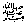
saying, “Jannah becomes perfumed with the sweetest fragrance in Ramadhaan. From the
beginning of the year till the end, it is being brightly decorated for
this blessed month. When the first night of Ramadhaan appears, a wind
blows from beneath the Arsh (Throne). It is called Mutheerah, which causes the leaves of the trees of Jannah
to rustle and door handles to sound, causing such a beautiful sound as
had never been heard before. The dark eyed beautiful ladies of Jannah
then step forward till they appear in the centre of the balconies of Jannah, saying: ‘Is there anyone making dua
to Allahfor us that Allah
may marry us to him?’ Then these women call out: ‘O Ridhwaan, keeper of
Jannah, what night is this?’ He replies: ‘labbaik, this is the first night of Ramadhaan, when the doors of Jannah
are opened to those who keep the fast from among the ummah
of Muhammad
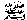
.’”
Rasulullah j further said, Allah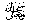
says, “O Ridhwaan open the doors of Jannah, and O Maalik, (keeper of Jahannam) close the doors of Jahannam for those who fast from the ummah
of Ahmad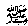
(another name for Nabi), O Jibraeel go down to the earth and tie the evil Shayaateen, put them in chains and throw them in the oceans so that they make no
mischief, thereby spoiling the fast of the ummah
of My beloved Muhammad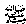
.”
Allah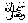
commands a caller from the heavens to call out three times on every
one of the nights of Ramadhaan: “Is there anyone begging of Me that I
may grant him his desire? Is there anyone
repenting to me that I may turn in mercy to him? Is there anyone
begging for forgiveness that I may forgive him? Who is there who shall
give a loan to the One whose wealth does not become less and the One who
fulfils without cutting short unjustly?”
Rasulullah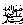
then said, “Every day at the time of iftaar, Allah
sets free one million people from the fire of Jahannam, all of whom had already earned entrance into Jahannam.On the last night He sets free as many as had been set free throughout
the month. On the night of Laylatul Qadr, Allah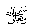
commands Jibraeel
to go down to the earth with a group of Malaaikah
(Angels). They go down carrying a green flag which is then planted on
top of the Kabah. Jibraeelhimself has one hundred wings, only two of which are spread out on
this night. He spreads out these wings which cover from the east to the
west. Jibraeel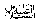
then sends out the Malaaikah
on this night in all directions to recite salaam upon each and everyone
they find in ibaadah (prayer) or sitting, performing Salaah
and praising Allah. They shake hands with them and say ‘Aameen’ to all their duas until dawn. When dawn comes, Jibraeelcalls out: ‘Depart O Malaaikah of Allah! Depart.’”
The Malaaikah
then inquire: “O Jibraeel, but what did Allah
do regarding the needs of the faithful people from among the ummah
of Ahmad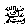
which they asked from Him?”
Jibraeel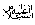
replies: “Allahlooked at them with mercy and forgave them all except four kinds of
people.”
Then we the Sahaabahasked: “Who are they, O Rasulullah
?”
Rasulullahreplied, “They are the people who drink wine, those disobedient to
their parents, those who do not speak to their near relatives and the mushaahin.”
We asked, “O Rasulullah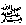
who is a mushaahin?”
He replied: “Those who have bad feelings in their hearts for their
brothers and break off relations with them”.
The night of Eidul Fitr, the night that is called Laylatul Jaa’izah (The night of prize giving), comes along. On the morning of Eid, Allahsends down the Malaaikah, to all the lands of the earth,
where they stand at the entrance of roads, calling out with a voice
that is heard by all except man and jinn: “O Ummah of Muhammad
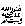
, come out of your houses towards a Lord that is noble and gracious,
who grants much and pardons the big sins.”
When they go towards the places for their Eid Salaah, Allah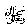
says to the Malaaikah: “What is the reward of that worker who has completed his work?”
The Malaaikah
reply: “O Lord and master, it is only right that he should receive his
reward in full.”
Allahthen says: “I call you to witness, O My Malaaikah, that for their having fasted during the month of Ramadhaan, and for
their having stood before Me in prayer by night, I have granted to them,
as reward, My pleasure and have granted them forgiveness. O My servants
ask now of Me, for I swear by My honour and My greatness, that
whatsoever you shall beg of Me this day in this gathering of yours for
the needs of the Hereafter, I shall grant you, and whatsoever you shall
ask for your worldly needs, I shall grant it. I swear by My honour that,
as long as you shall obey My commands, I shall cover up your faults. By
My Honour and My Greatness do I swear that I shall never disgrace you
together with the sinful people and disbelievers. Go now from here, you
are forgiven. You have pleased Me and I am pleased with you.”
The Malaaikah
on seeing this great reward given by Allah
upon the ummah
of Muhammad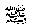
on the day of Eidul Fitr
become greatly pleased and happy. (As reported in Targheeb.)
O Allah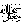
, make us also of those lucky ones, Aameen.
Commentary
The previous pages of this book already covered almost all that is
contained in this last long Hadeeth. A few points need attention. We see
here that there are a few people who do not get forgiven in Ramadhaan
and are very unlucky in not being able to share the great
gifts of Allah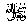
on the morning of Eid. Among them are those who fight and argue amongst themselves and those
disobedient to their parents. Let us ask those people one question: “You
have displeased Allahand having done so, what other place can you go to besides
Allah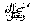
?” We feel very sad that for some reason or the other you
have made yourselves the target for the curse of Allah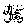
, His Rasul
and Jibraeel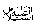
while at the same time you have been left out from Allah’s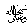
forgiveness which is freely granted.
Who else can grant you safety? Who and what can stand by your side when
you carry the curse of Rasulullah? Who can help you when Allah’s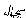
close angel Jibraeelhas made dua
against you? While Allahis excluding you from His forgiveness and mercy, I beg you my dear
brother and sister to think about your position at this moment. Think
and give up all that which takes you away from Allah. There is time to change and repent and now is that time. Tomorrow
you shall have to stand before a Judge before whom no rank, honour,
position and wealth shall help you. A Judge before whom only actions
shall count and Who is always aware of our every movement. Remember that
Allahmay forgive our faults as far as our relationship with Him is
concerned, but will not forgive, without punishment, our mistakes in our
relations with other people.
Rasulullah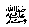
said: “The bankrupt one from among my ummah is that person, who shall appear on the day of Qiyaamah, bringing with him good actions like Salaah, Sawm
(fast) and charity, however, he had also sworn at someone, falsely
accused someone else and hurt someone, with the result that all these
people shall come forward with their complaints against him, giving
witness against him. As a penalty, his good deeds shall be taken away
and granted to the wronged ones. When his good deeds shall come to an
end, then the wronged persons sins shall be thrown upon him (when he is
not able to pay the full penalty because of not having enough good
deeds). Hence, in this way he shall enter Jahannam.” We see that in spite of many good deeds, his state of regret and
sorry cannot be described. (O Allah! save us from that).
The last Hadeeth
also gives a joyous message to the lucky ones. Allah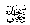
says that He shall not disgrace and humiliate those who did their
duties in front of (and among) the unbelievers and evil doers. This is
the greatness of Allah’s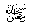
grace and kindness and also the importance Allah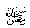
shows for the position of the Muslims. In addition for those who
wanted Allah’spleasure, another of His blessing and favour is that their faults and
sins will also be covered.
Abdullah ibnu Umarreports that Rasulullahsaid, “On the day of Qiyaamah, Allahshall call a muslim to come near to Him. A curtain shall be closed so
that none may see. Allahshall then remind him of each and every fault of his which he shall be
forced to admit. Seeing the great amount of his faults, that person
shall feel that he had certainly failed and shall be destroyed. But then
Allah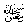
will say: ‘In the world I covered your faults and today too I will
hide them and forgive them for you.’” Thereafter his book of good deeds
shall be given to him.
This Hadeeth also states that the night before the day of Eid
is called the night of prize giving, the night when Allahgives the true reward. This night too should be properly appreciated.
Usually, once the announcement has been made that tomorrow is Eid, most of us, even the pious, enjoy ourselves in sleep on this night,
whereas this too is a night that should be spent in ibaadah.
Rasulullahsaid, “Whoever remains awake for ibaadah on the nights before both Eids
with the aim of gaining reward, his heart shall not die on that day when
hearts shall die.” The meaning here is that at the time when evil will
overpower all, his heart shall stay alive (guarded against evil). It may
also refer to the time when the horn shall be blown to announce the day
of Qiyaamah. On that day he will not become unconscious.
Rasulullah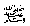
is also reported to have said, “Whoever stays awake for ibaadah on the following five nights, entrance into Jannah becomes waajib for him, Laylatul Tarwiyah (the night before the eight Zil Hijjah), Laylatul Arafah (the night before the ninth Zul Hijjah), Laylatul Nahr
(the night before the tenth Zul Hijjah), the night before Eidul Fitr
and the night before the fifteenth of Shabaan.
The Ulama’ have written that it is mustahab to remain in ibaadah on the nights before Eid. It is reported by Imaam Shafi
that, there are five nights in which duas are accepted; The night preceding Friday, the night before both Eids, the first night of Rajab and Laylatul Baraa’h (the fifteenth of Shabaan).
I have now come to the end of this book. In conclusion, hoping that
this shall be of benefit to those who look for Allah’s
pleasure, I beg all readers to make dua
for me, the humble writer of these pages, during those special hours of
Ramadhaan. It is possible that because of your duas, Allah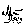
bestows His happiness and love upon me too. Aameen.